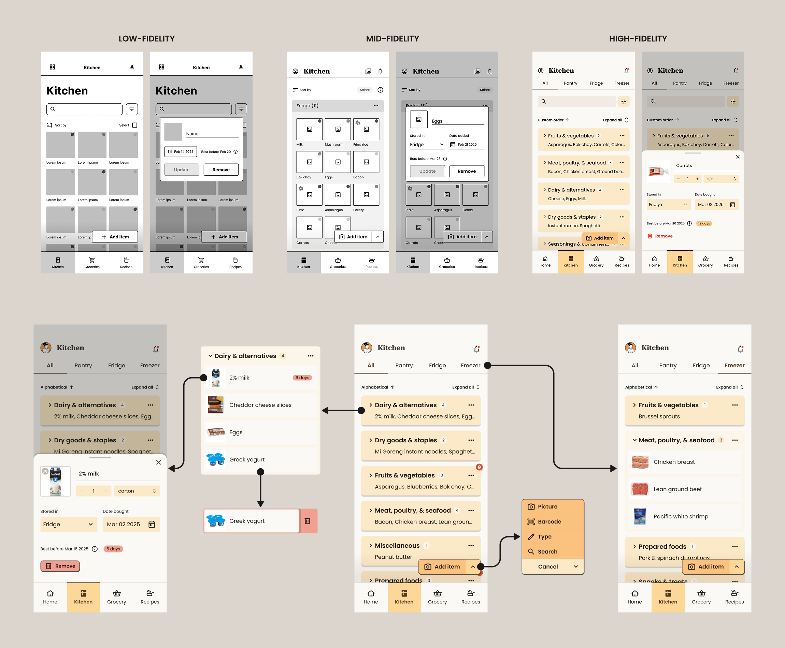
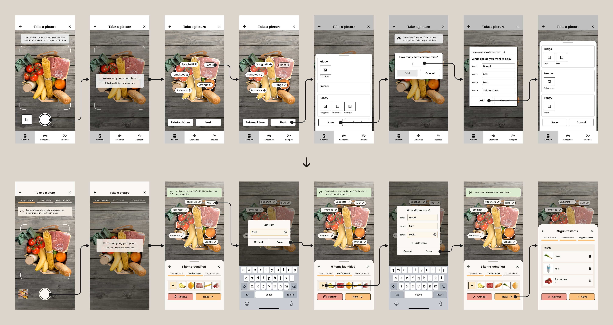

Designing a grocery management tool to reduce stress in meal activities.

Overview
It can be difficult for students to keep track of their groceries and turn their ingredients and leftovers into enjoyable meals amidst busy schedules. From research to design and testing, I explored college students' experience around meals and diets and developed EatWell, a digital tool to minimize obstacles to having healthy meals regularly. With EatWell, users easily manage their kitchen, keep track of estimated spoilage, plan grocery trips, and find recipes suitable for their dietary preferences, cooking ability, and available resources.
Tools
Figma, Sketchbook
Outcome
An MVP streamlining grocery shopping, ingredients management, and cooking.
Problem space
How might we help young adult postsecondary students make more informed meal decisions with consideration for their needs, preferences, and limitations?
Because they're in a transitional period where they're handling new environments, dynamics, and tasks, young adults have higher rates of irregularity in their routine compared to other age groups. Coupled with increasing workload, this leads to delayed bedtime, shorter sleep duration, and irregular meal times. Under the stress of time and busy schedules, many students tend to skip meals to make time or eat unhealthily more often.
39%
of students at 5 Canadian campuses were going without nutritious food.
(Beeston, 2016)
44.2%
of students rarely or never eat breakfast, 3.5% skip lunch, and 2.3% skip dinner.
(Intelligent, 2021)
29.3%
of U.S. students skip meals every day, 38.5% skip once a week, and 13.9% skip once per month.
(Pendergast et al., 2016)
Meet EatWell
EatWell brings grocery planning, managing ingredients and leftovers, and cooking into 1 platform, to...
While it's difficult to solve the core problems of time and motivation, the EatWell app takes current tools and improve the ease of use to alleviate some pain points and reduce the time usually required for meal activities.
Reduce stress and mental workload
EatWell keeps track of expiry dates and estimated spoilage, helping students reduce food waste and alerting them when their groceries are running low.
Build confidence
EatWell makes it easier for students to grocery shop and find recipes that suit their time, living situation, and skill level, helping students who live on their own for the first time familiarize themselves with grocery shopping and cooking independently.
Provide high flexibility, low commitment
This project aims to promote sustainable actions instead of only consistent activities. Omitting the traditional streak system would reduce stress for users.
Promote informed and sustainable actions
Students have more resources at their fingertips to find information that suits their situation and better understand how their choices would impact their well-being.

Research
Findings from online survey reveal that lack of nutrition knowledge isn't why many postsecondary students eat unhealthily, but rather the lack of time and high stress levels.
I wanted to assess how often nutrition is factored into meal decisions and whether lack of understanding is a barrier. While survey results didn't discount lack of nutrition knowledge as a barrier, they identified time, cost, stress, and availability of resources as the more common and impactful barriers to healthy eating.
84%
frequently consider the cost when buying food, drinks, and groceries.
56%
often factor in the time available, while the remaining occasionally consider it.
68%
often go for the convenient option.
Conversations with college students confirmed that students generally know how to eat healthily, but they struggle to eat healthily regularly with limited time and skills.
Making healthy and enjoyable meals requires time and skills that many students don't have and efforts they're not motivated to make. The majority are too busy to pay attention to the nutritional value of what they're eating, while the few who actively monitor their diet are either working out or navigating serious health issues.
Despite numerous existing apps, their cost, complexity, and lack of visibility prevent users from finding ones that suit their situations.
Nutrition coaches and diet apps can be useful and beneficial, but the calorie tracker and streak system found in many of them may not fit into students' busy lifestyles and stressful schedules. Students who have tried these apps express a lack of motivation to continue with their diet plans and dissatisfaction with the tedious freemium meal logging features.
Simpler apps like Yuka and Out of Milk are more economical for students and less mentally taxing, but are lesser known. More complex apps like MyFitnessPal or Healthify often put useful features behind a pay wall, reinforcing the misconception that eating healthy is expensive.

Ideate
I ideated potential solutions based on factors that affect students' eating habits, then transformed them into sketches to gather feedback.
Participants' general feedback and attitude toward each concept are shown through the emojis. They were more enthusiastic toward practical tools that they haven't encountered before.

Taking the features that had favourable feedback, I made low-fidelity concepts and conducted testing.
Participants' feedback was more mixed. They generally valued the convenience and affordability provided by certain tools. Notably, they would use the AI image analysis if the information is accurate and they can trust it. No concept was especially more impactful or favourable, so I mixed and matched desired features for the final concept.

This platform first focuses on increasing the convenience and affordability when buying and managing groceries.
This will be accomplished primarily by allowing users to track their leftovers and groceries at home, and providing cooking suggestions based on their time, abilities, available ingredients and facilities, and dietary preferences.

Stage 1 (MVP)
- Pantry manager to keep track of groceries and leftovers available at home
- Find affordable groceries or grocery deals nearby based on budget
- Recommend recipes based on available ingredients, time, difficulty, cooking equipment, etc.
- Filter results based on dietary preferences
Stage 2
- Engaging and informative cooking instructions
- Find affordable food and beverage (grocery and non-grocery) options nearby
- View explanations of nutrition information on food/beverage items before buying
- Connection to online grocery order
- Meal journal
Stage 3
- Get nutrition analysis by taking pictures of meals
- Collaborative database of recipes from family and friends
- Connection to healthcare professionals (dieticians, nutritionists, etc.)
- Reward system for positive activities
- Meal/diet plan

Design
I started with low-fi screens to capture the user flows of the app and start conducting user tests.

Within the Kitchen space, I went through multiple iterations to work out how to best organize the user's food and groceries.
There are commonly two layers of organization when it comes to food and groceries: by space and by type. As I designed the screens and conducted user tests, the organization system evolved to first allow people to organize by the real-life space their items would be in, then by the type of food.

I focused on iterating and testing the screens for image recognition, which will increase ease of use.
While this entire process is quite long, using AI to detect what food and/or groceries are in the image gives users a starting point to add multiple things more conveniently.
Opportunity to correct AI results
Showing exactly how individual items are recognized instead of simply displaying them all in one list makes it easier for users to identify mistakes made by AI, if any. Users can edit incorrect results.
Consistency and standards
The UI to edit results and reorder items is designed to follow existing conventions.
Visibility of system status
A progress tracker is added to show the user what steps are coming up and what steps have been completed.
Reducing workload
The user flow was changed so users can tap on a button to add more items, see everything in one list, and organize once at the end.

I conducted visual preference testing to narrow down a visual direction, then used that foundation to develop a design system to ensure consistency across screens.
I made three style tiles based on research into visual marketing strategies and colour trends and conducted visual preference testing. Test participants preferred warm colours, a welcoming and organic aesthetic, a sense of structure, and the homey feeling of serif fonts. One option includes neubrutalist aesthetic, which could be integrated to make the interface more interesting.

The MVP is finished, but EatWell can be refined and improved, especially in a more creative and engaging direction.
Testing and prototype
Previous user tests occurred quickly to accommodate the time constraint. I want to conduct a proper usability test with a more functional and robust Protopie prototype to continue refining the app and improving it for users.
Visual direction and engagement
EatWell needs a proper visual identity. Even if it's just a wordmark, I want EatWell to have a playful and welcoming logo, along with a defined brand guideline. A companion character could make the experience more engaging and enjoyable, and aligns with the original playful direction that was excluded due to time constraints.
Incorporate nutrition information
Going back to to the initial goal of improving understanding of nutrition, I want to explore effective learning methods and incorporate nutrition information in a stress-free and non-intrusive manner. The categorization of items by food groups opens up possibilities to include general nutrition information.

Reflection
Improving on the existing pain points would have been enough
EatWell isn't a completely original or groundbreaking concept—it mixes and matches desirable features from already existing apps and improves upon tedious processes. In the search for a completely original concept, I overlooked simpler improvements to the current experience for meals, groceries, and cooking apps. I'm interested in returning to the initial goal of improving nutritional understanding to explore creative and innovative learning methods, or focus solely on creating a great user experience for the grocery management aspect of EatWell.
Managing different moving parts
This was the first time I was in charge of a large-ish design project end-to-end. As much as I would have liked certain things to have been done differently, it was valuable to see where my strengths and limitations lie.